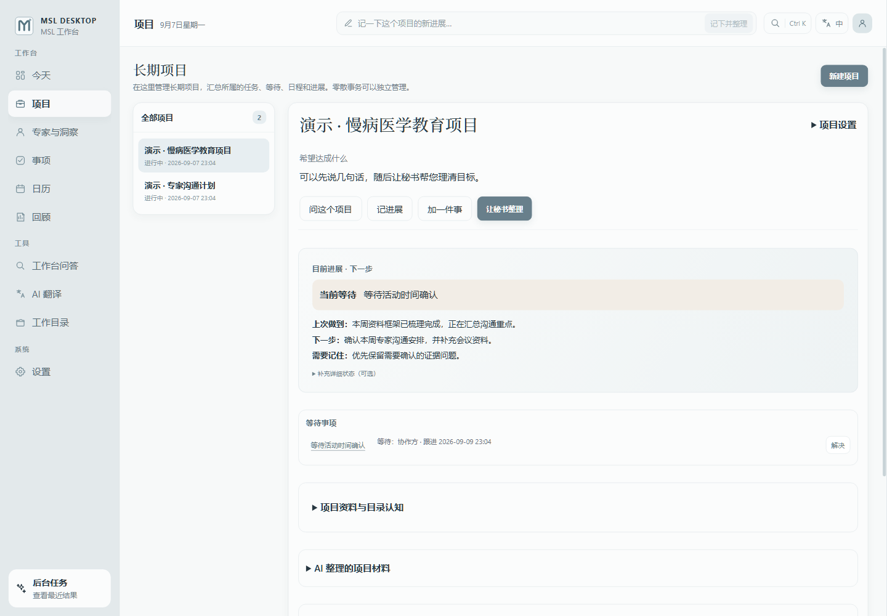

记得谁说过，也看见共性
交流原话与专家资料一起保存。梳理临床障碍、证据需求、合作机会，保留来源与待核实之处。
为医学联络官设计的日常工作台
专家的一句话，连着证据、项目和下一次跟进。
MSL Desktop 把这些线索留在一起，
陪你从交流走到行动。
v{{RELEASE_VERSION}}Windows x64Mac 版开发中
一次交流之后
工作流示意专家交流原话
“长期随访很重要，
但患者往往很难坚持下来。”
先了解随访中断的原因，暂不安排教育活动。
专家交流原话
“这类患者的长期获益，
目前有哪些证据？”
优先看长期随访数据，把证据缺口单独列出。
专家交流原话
“我们有一些随访资料，
可以先讨论研究问题。”
等团队确认数据可用性，再约时间讨论方案。
原话有出处，建议有归属，下一步由你决定。
我们的出发点
把 AI 嵌入工作。
留下想法与原话，整理随后进行。
结合项目、资料和日程，理清来路。
尊重修正；已有建议待处理时少打扰。
一份连续的工作记忆
交流前找回背景，交流后理清线索。
每次回顾，看见项目如何向前。

交流原话与专家资料一起保存。梳理临床障碍、证据需求、合作机会，保留来源与待核实之处。
任务、等待和日程关联到项目。建议经你确认后落入对应事项，零散事务也可以独立处理。
用 @项目 聚焦相关记录，连续追问。回答附带来源，也说明目前缺少哪些依据。
秘书简报、周报与月报沿着工作进展回顾；你的意见与调整，继续参与后续整理。
清楚的资料边界
记录保存在本地。WPS、OneDrive 等云盘的本地同步文件夹，可用于备份和多设备同步。
工作台读取关联资料，不添加、修改或删除源工作文件。AI 分析所需资料会发送给你选择的模型服务商。
MSL DESKTOP
从手边正在推进的一个项目开始。